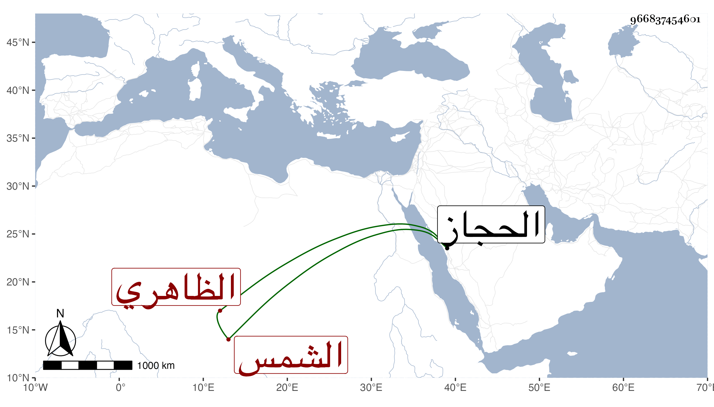

0902Sakhawi.DawLamic.ITO20230111-ara1.EIS1600.966837454601
Biography ID: 966837454601
721
قراسنقر الشمس الظاهري برقوق . ترقى في أيام ابن أستاذه ثم صار في أيام المؤيد طبلخاناه وسافر أمير حاج المحمل في الدولة الأشرفية غير مرة ثم مرض تعطل وبطل أحد شقيه وأخرج الأشرف أقطاعه فلم يلبث أن مات في يوم الأربعاء تاسع عشري ذي الحجة سنة تسع وثلاثين ، وكان مشكور السيرة عنده حشمة ودعابة وله صدقات ومعروف أنشأ مدرسة صغيرة بالقرب من ميدان الخليل ببركة الناصري تجاه داره القديمة وعمل لأرباب الوظائف فيها وقفا وكذا وقف وقفا لحمل المنقطعين بطريق الحجاز رحمه الله .
